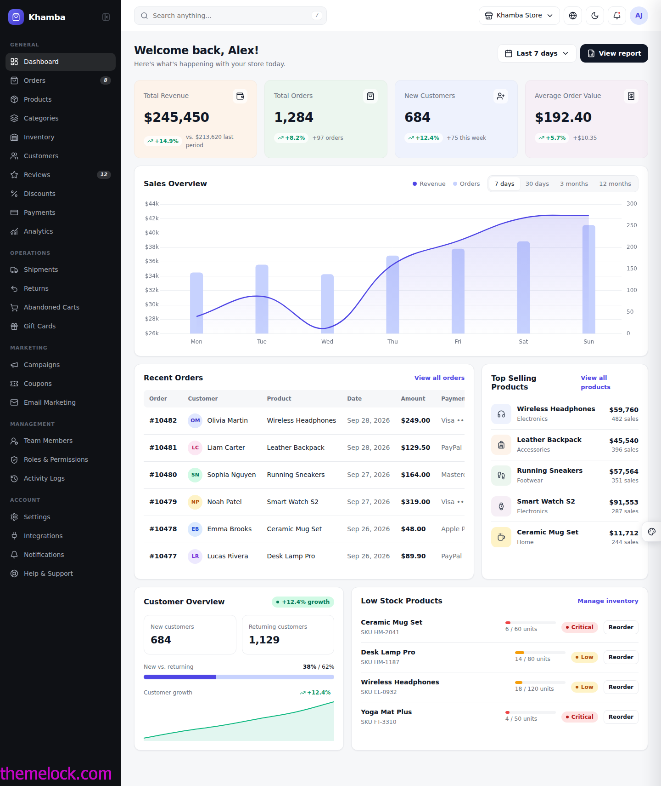
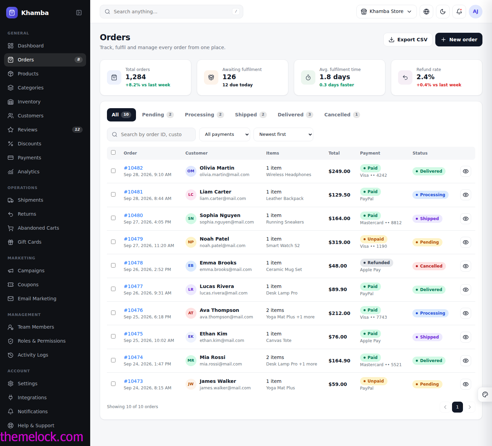
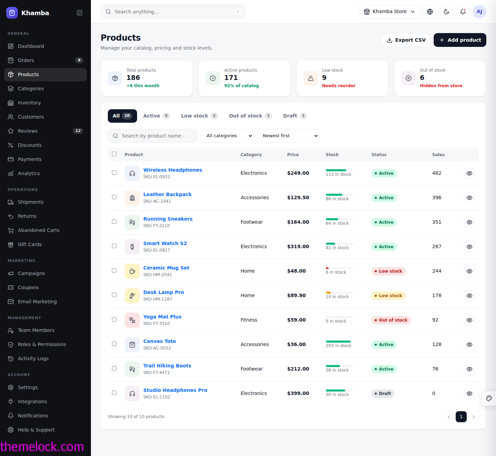
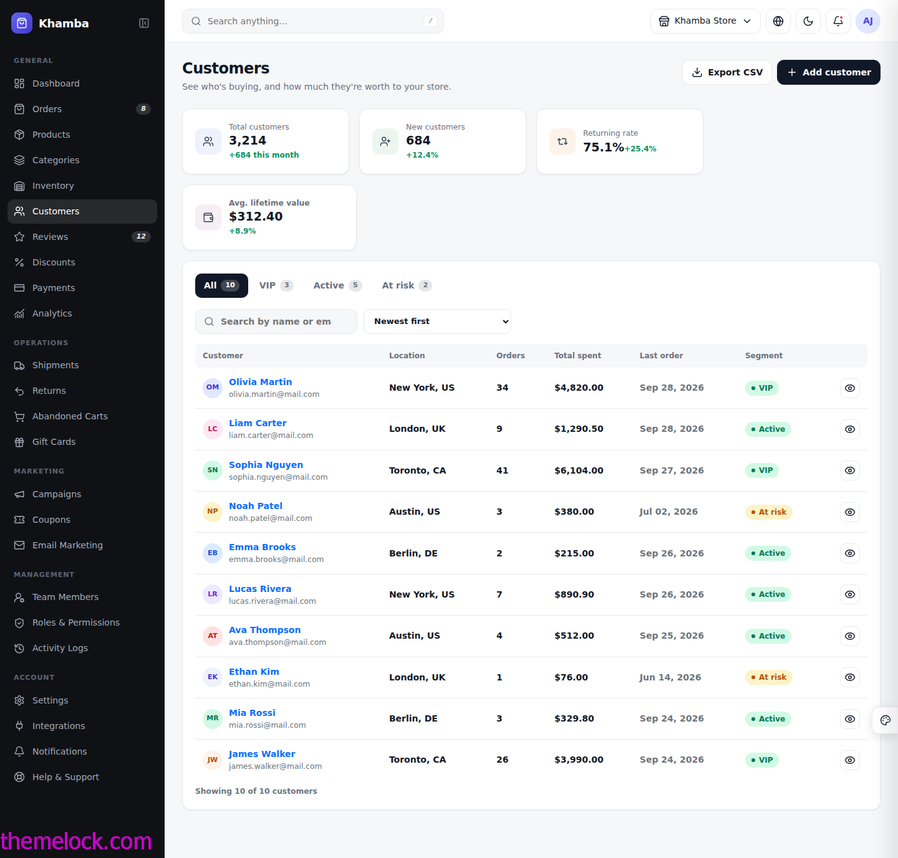
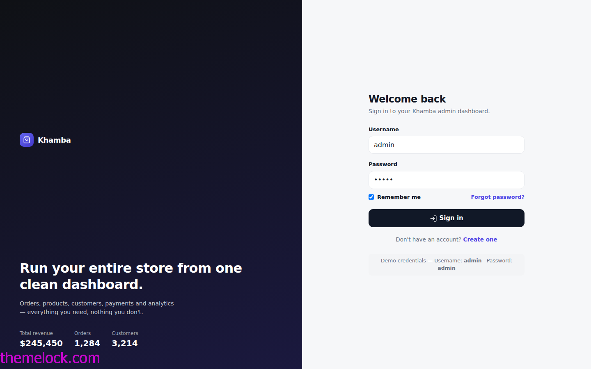
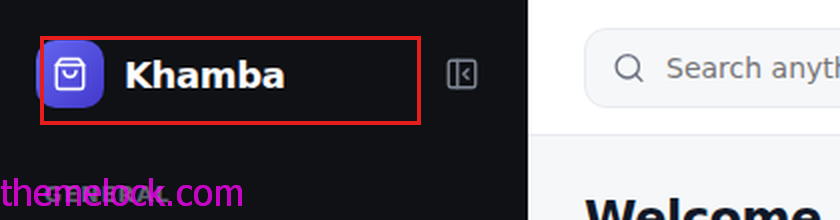
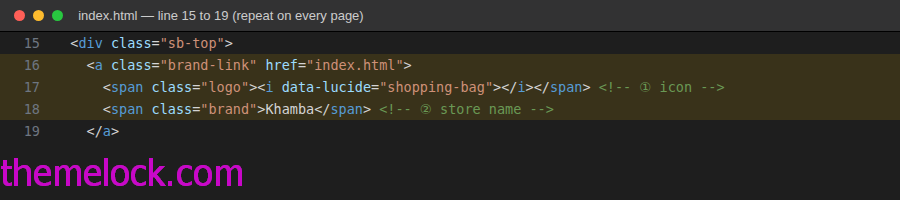
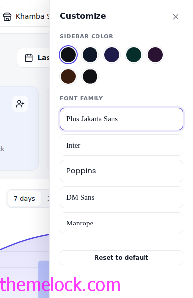

Documentation
Khamba: E-commerce Admin Dashboard Template · Version 1.0.0 · 2026
1. Introduction
Khamba is a premium admin dashboard template for e-commerce stores. It is built with plain HTML5, CSS3 and vanilla JavaScript plus Bootstrap 5, jQuery, Chart.js and Lucide icons — no build step required. Open a file in the browser and it works.


Key features
- 33 HTML pages: a dashboard, login and register, and 28 application pages covering orders, products, customers, marketing, team management and account settings.
- Fixed, collapsible sidebar with 6 navigation groups and badges. It becomes an off-canvas drawer on tablet and mobile.
- Clean topbar with global search, store switcher, theme toggle, notifications and a working user menu (Profile, Account Settings, Billing, Logout).
- Light and dark mode, remembered between visits.
- Built-in live customizer for the sidebar colour and site-wide font family.
- Real Chart.js charts: revenue/orders trend, customer growth, sales-by-category donut.
- Working demos: order/product/customer detail drawers, bulk actions, CSV export, modal forms with validation, toast confirmations, an FAQ accordion.
- A small design system driven by CSS variables (colours, radius, shadow, sidebar width, font).
- Responsive layout with light/dark mode support throughout.
2. Getting started
2.1 What is included
| Item | Description |
|---|---|
index.html … terms.html | All 31 template pages (see section 3). |
documentation/ | This documentation (open documentation/index.html). |
assets/css/style.css | All styles and design tokens for every page. |
assets/js/app.js | All interactivity for every page, in one file, organised into numbered page-guarded sections. |
2.2 Requirements
- Any modern browser: latest Chrome, Edge, Firefox or Safari.
- A code editor for customising, for example VS Code.
- An internet connection for Bootstrap, jQuery, Chart.js, Lucide icons and Google Fonts, which load from public CDNs (see Going offline to self-host them).
- Node.js, npm or a bundler are not required.
2.3 Quick start
- Unzip the package.
- Open
index.htmlin your browser to see the Dashboard, or openlogin.htmlfirst to see the sign-in screen (demo login:admin/admin). - Optional: serve the folder with any static server for a closer-to-production experience, for example
npx serveorpython -m http.serverinside the template folder.
2.4 File structure
khamba/
├── index.html Dashboard (home page)
├── login.html · register.html Authentication pages (demo)
├── orders.html … terms.html 28 application pages (see section 3)
├── documentation/ This documentation
├── assets/
│ ├── css/style.css Styles + design tokens for every page
│ └── js/app.js All application logic, in page-guarded sections3. All pages
The sidebar links to the pages below, grouped exactly as they appear in the navigation. Data on every page is realistic demo content that you replace with your own.
General
| File | Page | What it shows |
|---|---|---|
index.html | Dashboard | Revenue, orders, customers and low-stock KPIs, a revenue/orders chart, recent orders and top products. |
orders.html | Orders | Filterable, sortable order table with bulk ship/cancel actions, CSV export and a per-order detail drawer. |
products.html | Products | Product catalog with stock bars, category/status filters, bulk actions and a detail drawer. |
categories.html | Categories | Visual category cards with product counts, status and quick edit/delete. |
inventory.html | Inventory | Stock, reserved and available quantities with reorder points and low-stock tabs. |
customers.html | Customers | Customer list with VIP/Active/At-risk segments, sort by spend, and a profile drawer. |
reviews.html | Reviews | Star-rating breakdown, moderation queue and approve/reject/reply actions. |
discounts.html | Discounts | Coupon codes with usage bars, type/status filters and a creation form. |
payments.html | Payments | Transactions, payment-method breakdown, payout schedule and a per-transaction drawer. |
analytics.html | Analytics | Traffic sources, sales-by-category chart, top products and a conversion funnel. |
Operations
| File | Page | What it shows |
|---|---|---|
shipments.html | Shipments | Tracking numbers, carriers, ETAs and a per-shipment tracking timeline. |
returns.html | Returns | Return requests with one-click approve / reject / mark-refunded actions. |
abandoned-carts.html | Abandoned Carts | Carts left at checkout, with a one-click recovery-email action. |
gift-cards.html | Gift Cards | Issued gift-card balances, expiry dates and redemption status. |
Marketing
| File | Page | What it shows |
|---|---|---|
campaigns.html | Campaigns | Marketing campaigns across email, social and ad channels, with reach and revenue. |
coupons.html | Coupons | One-off coupon codes issued to individual customers. |
email.html | Email Marketing | Newsletter and automation sequences with open/click rates. |
Management
| File | Page | What it shows |
|---|---|---|
team.html | Team Members | Admin team list with roles, status and an invite form. |
roles.html | Roles & Permissions | Role cards and a permission matrix across the team. |
logs.html | Activity Logs | A read-only audit trail of admin actions and security events. |
Account
| File | Page | What it shows |
|---|---|---|
settings.html | Settings | Store information, regional settings and checkout preferences. |
integrations.html | Integrations | Connect / disconnect cards for Stripe, PayPal, Mailchimp and more. |
notifications.html | Notifications | Toggle switches for every notification category and delivery channel. |
help.html | Help & Support | Support channels, an FAQ accordion and a contact form. |
User menu
| File | Page | What it shows |
|---|---|---|
profile.html | Profile | The signed-in user's own profile and recent activity. |
account-settings.html | Account Settings | Personal info, password change and security toggles. |
billing.html | Billing | Current plan, payment method and invoice history. |
Auth & legal
| File | Page | What it shows |
|---|---|---|
login.html | Sign In | The login screen. Demo credentials: admin / admin. |
register.html | Create Account | The sign-up screen for new admin accounts. |
privacy.html | Privacy Policy | A standalone legal page, linked from every footer. |
terms.html | Terms of Service | A standalone legal page, linked from every footer. |
4. Screenshots






5. Login and Register
Files: login.html, register.html.


- The login form is validated in the browser. Submitting
admin/adminredirects toindex.html; anything else shows an inline error. register.htmlvalidates required fields and that the two passwords match, then redirects tologin.html?registered=1, which shows a success message.- The sidebar and user-menu Logout links open
login.html.
admin/admin pair in app.js and does not protect other pages. Connect it to your own authentication API before going to production — see Connect a backend.6. Layout components
6.1 Sidebar


The sidebar is a fixed, scrollable column (264 px wide, 76 px collapsed). It contains the logo, six navigation groups, and a store card with Logout at the bottom.
Add a menu item
<a class="sb-link" href="my-page.html" title="My Page">
<i data-lucide="star"></i>
<span>My Page</span>
<em class="sb-badge">NEW</em> <!-- optional badge -->
</a>Place it under a group label, or start a new group with:
<div class="sb-group">MY GROUP</div>Icons come from Lucide. Use the icon name after data-lucide=. The title attribute shows as a tooltip when the sidebar is collapsed.
Active page
Add active to the sb-link of the current page:
<a class="sb-link active" href="orders.html" title="Orders">...</a>Collapse and mobile
- The collapse button in the sidebar header (
#sbToggle) shrinks the sidebar to icons only. The choice is saved tolocalStorageaskhamba-collapsed. - Below 992 px the sidebar becomes an off-canvas drawer opened by the hamburger button in the topbar (
#mobileToggle) and closed by tapping the dark overlay (#backdrop). - Change the widths with the CSS variables
--sb-wand--sb-w-c(collapsed).
6.2 Topbar
| Element | Notes |
|---|---|
| Global search | #search. Press / anywhere on the page to focus it; clicking a scope (Products / Orders / Customers / Pages) fills the input. |
| Store selector | Dropdown with a sample second store and an "Add new store" action. |
| Theme toggle | #themeToggle. Switches light and dark mode, saved as khamba-theme. |
| Notifications | Dropdown with an unread dot and sample alerts. |
| User menu | Profile, Account Settings, Billing and Logout — each a real page (see sections 3 and 5). |
6.3 Footer
The footer (<footer class="footer-x">) sits at the bottom of every page via a sticky-footer flex layout, so it stays at the bottom even when a page has little content. Edit the copyright text and the Privacy/Terms/Help links with Find and Replace in Files.
7. Branding and customization
7.1 Change the logo most asked
The logo appears in the sidebar header of every dashboard page, and again in the left panel of the login and register pages. It has two parts: an icon in a colour square, and the store name text next to it.


Step 1 — change the store name (text)
Find the word Khamba inside <span class="brand"> and replace it with your own store name.
Step 2 — replace the icon with your own logo image
Find
<span class="logo"><i data-lucide="shopping-bag"></i></span>Replace with
<img src="your-logo.png" alt="Logo" style="width:32px;height:32px;border-radius:9px;object-fit:cover">A square image around 64×64 px (PNG with a transparent background) gives the cleanest result. The sidebar has a dark background, so make sure your logo is visible on dark colours.
Ctrl/Cmd + Shift + H) — search for Khamba and replace with your store name, then search for the <span class="logo">…</span> line and replace it with your <img> tag. Also update the <title> tag in each page's <head> and the "Khamba Store" text in the .store-card block near the bottom of the sidebar.Favicon
The template does not set a favicon by default. Add one by placing this inside <head> on every page:
<link rel="icon" href="favicon.svg" type="image/svg+xml">7.2 Colours (design tokens)
Almost all colours, radius and shadow values are CSS variables at the top of style.css. Change a value once and it updates the whole template.
:root{
--font:'Plus Jakarta Sans',system-ui,sans-serif;
--bg:#f6f7f9; --card:#fff; --border:#e8eaee;
--text:#111827; --muted:#6b7280; --hover:#f3f4f6;
--primary:#4f46e5;
--sb:#0f1115; --sb-w:264px; --sb-w-c:76px;
--r:14px;
--shadow:0 1px 2px rgba(16,24,40,.04),0 1px 3px rgba(16,24,40,.03);
}
[data-bs-theme=dark]{
--bg:#0b0d11; --card:#14171d; --border:#242832;
--text:#f3f4f6; --muted:#9aa1ae; --hover:#1c2028; --shadow:none
}| Token | Used for |
|---|---|
--primary | Links, chart lines, active nav icon, focus rings. |
--bg / --card / --border | Page background, cards/dropdowns, borders. |
--text / --muted | Main text and secondary text. |
--hover | Hover background for rows, buttons and list items. |
--sb | Sidebar background — also set live by the Customizer (see 7.4). |
--sb-w / --sb-w-c | Sidebar width, expanded and collapsed. |
--r / --shadow | Card corner radius and drop shadow. |
--font | Font family for the whole site — also set live by the Customizer. |
.s-* classes further down in style.css, with matching dark-mode variants, so you can restyle statuses independently from the main palette.7.3 Fonts
Khamba ships with five Google Fonts already linked in every page's <head>: Plus Jakarta Sans (default), Inter, Poppins, DM Sans and Manrope. Switch between them live with the Customizer (see 7.4), or set one permanently by changing --font in style.css and removing the others from the Google Fonts <link> tag to save a request.
7.4 Live customizer
Click the palette icon fixed to the right edge of any dashboard page to try different looks instantly, with no code changes:


- Sidebar colour — 6 presets, or pick any custom colour.
- Font family — all 5 fonts above, applied across the whole dashboard including chart text.
- Choices are saved per-browser in
localStorage(khamba-sb,khamba-font), so they persist on refresh. "Reset to default" clears them.
7.5 Dark mode
Toggle with the moon/sun icon in the topbar (#themeToggle). It flips the data-bs-theme attribute on <html> between light and dark, which switches every CSS variable in one go, redraws open charts with dark-mode-aware colours, and is saved to localStorage as khamba-theme.
8. Components and JavaScript
8.1 UI building blocks
Reusable classes you'll see throughout style.css: .card-x (panel), .kpi (metric card), .table-x (data table), .badge-x.s-* (status pill), .tabs (status filter tabs), .btn-dark-x / .btn-soft (buttons), .row-item (icon + label + value row), .bar (stock/usage progress bar).
8.2 Charts
All charts use Chart.js (loaded from a CDN). Chart data lives directly inside each page's guarded section of app.js — for example the Dashboard's revenue/orders chart and customer-growth sparkline are defined in section 2 of app.js, and Analytics' funnel/category-donut data is in section 5. Replace the arrays with your own numbers; the chart will redraw automatically, including on theme/font changes.
8.3 Modals, drawers and toasts
- Modals (e.g. "New order", "Add product") use plain Bootstrap 5 modals with HTML5
requiredvalidation; submitting shows a confirmation toast and resets the form. - Detail drawers (order/product/customer/transaction detail) are plain Bootstrap 5 offcanvas panels, written directly in each page's HTML and opened with
data-bs-toggle="offcanvas"— no JavaScript is needed to open them. - Toasts are triggered from JavaScript with
window.showToast('Your message'), defined once inapp.jsand shared by every page.
8.4 JavaScript reference
app.js is a single file for every page. It is organised into numbered, clearly commented sections; each section only runs when the element it needs is present on the current page (for example, the Orders section is guarded by if (document.getElementById('ordersTable'))), so loading the same file everywhere never causes errors.
| Section | Covers |
|---|---|
| 1 | Shared on every page: sidebar collapse/drawer, theme, customizer, search, toast helper. |
| 2 | Dashboard charts |
| 3–4 | Orders, Products |
| 5 | Analytics charts |
| 6–11 | Categories, Inventory, Customers, Reviews, Discounts, Payments |
| 12–15 | Shipments, Returns, Abandoned Carts, Gift Cards |
| 16–18 | Campaigns, Coupons, Email Marketing |
| 19, 22–24 | (reserved) Team, Roles, Activity Logs |
| 27–31 | Settings, Integrations, Notifications, Help, Account Settings |
| 25–26 | Login, Register |
9. Responsive behaviour
- Desktop (≥992 px): fixed sidebar, full topbar, multi-column KPI and chart grids.
- Tablet/mobile (<992 px): the sidebar becomes an off-canvas drawer; KPI cards drop to 2 columns; wide tables scroll horizontally inside their card.
- All interactive panels (modals, offcanvas drawers, dropdowns) are Bootstrap 5 components and are touch-friendly out of the box.
10. How to
10.1 Add a new page
- Duplicate the page that is closest to what you need (for example, duplicate
orders.htmlfor another table-based page). - Change the
<title>, the page<h1>and the subtitle. - Remove
activefrom the old sidebar link and add it to the link for your new page (or add a brand-new<a class="sb-link">, see Sidebar). - Replace the content between
<main class="content">and</main>. Keep the sidebar, topbar, footer and the<script src="app.js">tag. - Give your page's unique table/grid a unique
id, then add a new guarded section at the end ofapp.jsfollowing the pattern of the existing sections (see 8.4).
10.2 Remove a page or menu item
Delete the HTML file and remove its <a class="sb-link"> element from the sidebar of every other page. Use Find in Files with the file name (for example gift-cards.html) to see every place that links to it.
10.3 Going offline and production
- Icons: self-host Lucide (
npm i lucide) and replace the CDN<script>tag with your local copy oflucide.min.js. - Bootstrap / jQuery / Chart.js: each page loads these from
cdn.jsdelivr.netandcode.jquery.com. Install them with npm and swap the<script>/<link>tags for your local copies. - Fonts: download the Google Fonts you use, add
@font-facerules tostyle.cssand remove the Google Fonts<link>. - Avatars: demo customer/team photos load from
randomuser.me. Findrandomuser.meand point avatars at your own images. - Hosting: upload the folder to any static host (Netlify, Vercel, GitHub Pages, S3, shared hosting). No server code is required.
10.4 Connect a backend
The template contains only front-end code and demo data. Typical steps: render table rows and KPI values from your API, submit modal forms with fetch() instead of the demo validation handlers, replace the hard-coded admin/admin check in the login section of app.js with a real auth API call, and generate real invoices/CSV exports on the server. Because every page is a static file with no framework lock-in, you can also convert the shared sidebar, topbar and footer into includes or components in your own stack (PHP, Laravel, Django, Next.js and others).
11. Accessibility
- Semantic landmarks:
aside,nav,header,mainandfooter. - Icon-only buttons carry a
titleattribute; Bootstrap dropdowns, offcanvas drawers and modals use their built-in ARIA attributes. - Visible focus states on inputs, links and buttons throughout.
- Colours are CSS tokens, so you can adjust contrast globally (see 7.2).
12. Troubleshooting and FAQ
Icons show as empty squares
Lucide could not load. Check your internet connection, or self-host it (see Going offline).
Avatars do not show
Demo avatars come from an external service (randomuser.me). This is expected and falls back to initials automatically — replace them with your own images for production.
My CSS or JS changes do not appear
Hard refresh with Ctrl+F5 (Cmd+Shift+R on macOS).
Charts are empty or buttons do nothing
A JavaScript error stops the page script. Open the browser console (F12), fix the error, and make sure app.js is loaded with the correct relative path and after jQuery, Bootstrap and Chart.js.
Is this a real, working store?
No — all data (orders, customers, products, numbers) is realistic placeholder content. Buttons like "New order", "Add product" and "Export CSV" work as real front-end interactions (forms validate, files download, toasts confirm actions), but there is no database behind them.
Can I use it with React, Vue, Laravel or Django?
Yes. Copy style.css, reuse the markup, and adapt the small pieces of logic in app.js to your framework (see Connect a backend).
13. Credits, sources and changelog
| Resource | Use | License |
|---|---|---|
| Bootstrap 5 | Layout, modals, offcanvas, dropdowns | MIT |
| jQuery | DOM helpers used across app.js | MIT |
| Chart.js | Revenue, growth and category charts | MIT |
| Lucide | Icon set | ISC |
| Plus Jakarta Sans, Inter, Poppins, DM Sans, Manrope (Google Fonts) | Typefaces, switchable in the customizer | SIL Open Font License |
| randomuser.me | Demo avatars only | Not included — replace before release |
All names, numbers and emails in the demo are fictional.
Changelog
1.0.0 (2026): initial release with the Dashboard, 28 application pages, login and register, light and dark mode, live customizer and a responsive layout.
Support
For help, please use the support channel of the marketplace where you purchased the template, and include the page name and browser you are using.